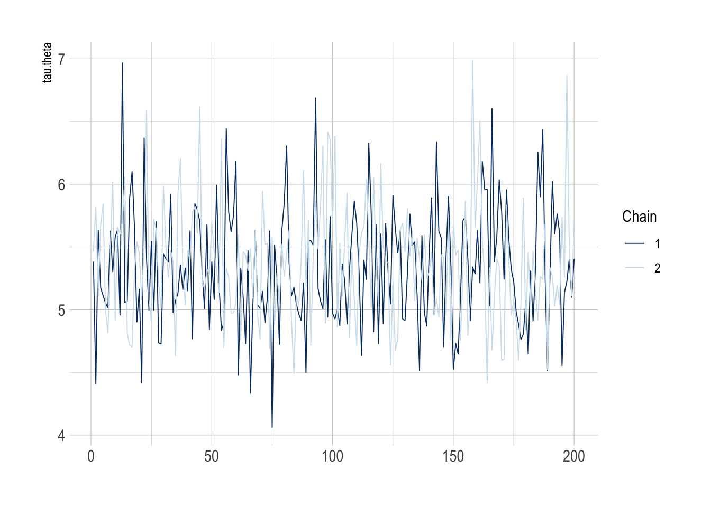

SHARP Bayesian Modeling for Environmental Health Workshop
Author
Garyfallos Konstantinoudis
Published
August 15, 2023
Goal of this computing lab session
This goal of this lab is to use NIMBLE to carry out a disease mapping study.
What’s going to happen in this lab session?
During this lab session, we will:
Explore ways of visualizing spatial data;
Define the neighborhood matrix in R;
Fit and interpret the BYM model in NIMBLE; and
Perform spatial ecological regression
Introduction
We will use the COVID-19 deaths during March-July 2020, in England, at the LTLA geographical level (317 areas), as taken from the published paper:
Konstantinoudis G, Padellini T, Bennett JE, Davies B, Ezzati M, Blangiardo M. Long-term exposure to air-pollution and COVID-19 mortality in England: a hierarchical spatial analysis. medRxiv [Preprint]. 2020 Aug 11:2020.08.10.20171421. doi: 10.1101/2020.08.10.20171421. Update in: Environ Int. 2021 Jan;146:106316. PMID: 32817974; PMCID: PMC7430619.
For that analysis, we included 38,573 COVID-19 deaths up to June 30, 2020 at the Lower Layer Super Output Area level in England (\(n = 32844\) small areas). We retrieved averaged NO\(_2\) concentration during 2014-2018 from the Pollution Climate Mapping. We used Bayesian hierarchical models to quantify the effect of air pollution while adjusting for a series of confounding and spatial autocorrelation.
We will build simple Bayesian models to try to understand what is happening in the data. Once again we will use NIMBLE as the basis for our Bayesian model writing.
LTLA deaths expectd TtlICUB
Length:316 Min. : 4.0 Min. : 8.287 Min. :0.000e+00
Class :character 1st Qu.: 77.0 1st Qu.: 99.339 1st Qu.:8.548e-05
Mode :character Median : 117.5 Median :129.067 Median :8.092e-03
Mean : 155.6 Mean :155.630 Mean :1.399e-02
3rd Qu.: 191.2 3rd Qu.:177.896 3rd Qu.:1.460e-02
Max. :1226.0 Max. :903.219 Max. :1.911e-01
NO2 IMD geometry
Min. : 4.48 Min. :1.000 MULTIPOLYGON :316
1st Qu.:11.09 1st Qu.:2.000 epsg:27700 : 0
Median :13.96 Median :3.000 +proj=tmer...: 0
Mean :15.05 Mean :2.997
3rd Qu.:17.26 3rd Qu.:4.000
Max. :46.45 Max. :5.000
class(data_england)
[1] "sf" "tbl_df" "tbl" "data.frame"
data_england_simpler <- rgeos::gSimplify(as(data_england, "Spatial"), tol =500)
rgeos version: 0.6-4, (SVN revision 699)
GEOS runtime version: 3.11.0-CAPI-1.17.0
Please note that rgeos will be retired during October 2023,
plan transition to sf or terra functions using GEOS at your earliest convenience.
See https://r-spatial.org/r/2023/05/15/evolution4.html for details.
GEOS using OverlayNG
Linking to sp version: 2.0-0
Polygon checking: TRUE
The relative risks (RRs) will be smoothed using the Poisson model with a log-link function, as we have seen in previous lectures and labs. As usual in this workshop, the inference is done with NIMBLE called through R.
In particular, let each area \(i\) be indexed by the integers \(1, 2,...,N\). The model is as follows: \[
\begin{eqnarray}
O_{i} & \sim & \text{Pois}(\lambda_{i}E_{i} ) \quad i = 1, 2,...,N \\
\log(\lambda_{i}) & = & \alpha + \theta_{i} \\
\theta_{i} & \sim & N(0,\sigma_{\theta})
\end{eqnarray}
\] where \(\sigma_{\theta}\) is a standard deviation term that controls the magnitude of \(\theta_{i}\).
As in previous labs, we will write the model in NIMBLE. Specify the prior of \(\tau_{\theta}\) in the code below (tau.theta). We can try a Gamma with parameters 1 and 0.01, which is a sensible option for a Poisson count model as it goes from 0 upwards, so can not be negative, like counts:
unstr_code <-nimbleCode({# priors alpha ~dnorm(0, sd =100000) # vague prior (large variance) tau.theta ~dgamma(1, 0.01) # prior for the precision hyperparameter# likelihoodfor (i in1:N) { O[i] ~dpois(mu[i]) # Poisson likelihoodlog(mu[i]) <-log(E[i]) + alpha + theta[i] theta[i] ~dnorm(0, tau = tau.theta) # area-specific RE RR[i] <-exp(alpha + theta[i]) # area-specific RR }# overall RR across study region overallRR <-exp(alpha)})
The following code subsets the data to London so the models are quicker to run. We’re going to run the models for London, then load in the samples for England (and pretend we ran for England!).
# Obtain the number of LTLAsn.LTLA <-nrow(data_england)n.LTLA
[1] 316
Create data object as required for NIMBLE.
# Format the data for NIMBLE in a listcovid_data <-list(O = data_england$deaths # observed nb of deaths)covid_constants <-list(N = n.LTLA, # number of LTLAsE = data_england$expectd # expected number of deaths)
What are the parameters to be initialised? Create a list with two elements and call it inits (each a list) with different initial values for the parameters:
Note that the parameters that are not set, will NOT be monitored!
Run the MCMC simulations calling Nimble from R using the function nimbleMCMC(). The burn-in should be long enough to discard the initial part of the Markov chains that have not yet converged to the stationary distribution.
tic <-Sys.time()modelGS.sim <-nimbleMCMC(code = unstr_code,data = covid_data,constants = covid_constants,inits = inits,monitors = parameters_to_monitor,niter =50000,nburnin =30000,thin =100, # thinning to get make the posterior samples more independent – useful for correlated modelsnchains =2,setSeed =9,progressBar =TRUE,samplesAsCodaMCMC =TRUE,summary =TRUE,WAIC =TRUE)toc <-Sys.time()toc - tic # ~ 2minutes# saveRDS(modelGS.sim, file = "NIMBLE_IDD_A1")
It’s good practice to save samples, especially if model runtimes get long. Let’s load the samples back up.
The Gelman-Rubin diagnostic (\(\widehat{R}\)) The Gelman-Rubin diagnostic evaluates MCMC convergence by analyzing the difference between multiple Markov chains. The convergence is assessed by comparing the estimated between-chains and within-chain variances for each model parameter. Large differences between these variances indicate nonconvergence. When the scale reduction factor is high (perhaps greater than 1.1), then we should run our chains out longer to improve convergence to the stationary distribution.
The \(\widehat{R}\) of the overallRR is always lower than 1.1.
With more complicated models, sometimes it’s nice to see if the traceplots are working too. Remember there are two chains of samples this time, which should look like they broadly have the same distribution if they have converged.
mcmc_trace(modelGS.sim$samples, pars =c("tau.theta"))

We can use the functions mcmc_acf_bar() and mcmc_acf() to get the autocorrelation plots for the different chains for tau.theta (which should be as near to 0 as possible).
# mcmc_acf_bar(modelGS.sim$samples, pars = c("tau.theta"))mcmc_acf(modelGS.sim$samples, regex_pars =c("tau.theta"))
Use the functions mcmc_hist() and mcmc_dens() to get the histogram and the density plots of the posterior tau.theta for chain 1.
mcmc_hist(modelGS.sim$samples$chain1, pars =c("tau.theta"))
`stat_bin()` using `bins = 30`. Pick better value with `binwidth`.
# mcmc_dens(modelGS.sim$samples$chain1, pars = c("tau.theta"))
Use the function mcmc_dens_overlay() to get the density plot of the posterior tau.theta for both chains.
mcmc_dens_overlay(modelGS.sim$samples, pars =c("tau.theta"))
To see the WAIC, which can be used to compare to other models to evaluate how well parameterised a model was.
modelGS.sim$WAIC
nimbleList object of type waicNimbleList
Field "WAIC":
[1] 2650.542
Field "lppd":
[1] -1158.889
Field "pWAIC":
[1] 166.3826
Map of the (globally) smoothed RRs
Let’s map the smoothed RRs in R we extract the posterior median of the relative risks
RR <- modelGS.sim$summary$all.chains[str_c("RR[", seq(n.LTLA), "]"), "Median"] # posterior median
The RRs will be smoothed using the Poisson model and the BYM model in the log-link function. In particular, let each area \(i\) be indexed by the integers \(1, 2,...,N\). The model is as follows.
A Besag, York, Mollie (BYM) spatial model considers two things:
Neighboring Influence: It looks at how connected areas are. If two areas are close to each other, there’s a chance that a disease can move from one area to another. So, if a disease is in one area, it might “spill over” into the neighboring area.
Background Risk: This is like the natural risk of the disease occurring, even without any special factors. Some areas might naturally have more cases due to other factors. The model takes this into account too.
where \(\sigma_{\phi}\) is a standard deviation term that controls the magnitude of \(\phi_{i}\), i.e. the spatial structured term.
Let’s set up the BYM model.
BYM_code <-nimbleCode({# priors alpha ~dflat() # vague prior (Unif(-inf, +inf)) overallRR <-exp(alpha) # overall RR across study region tau.theta ~dgamma(0.5, 0.05) # prior for the precision hyperparameter sigma2.theta <-1/ tau.theta # variance of unstructured area random effects tau.phi ~dgamma(0.5, 0.0005) # prior on precision of spatial area random effects sigma2.phi <-1/ tau.phi # conditional variance of spatial area random effects# likelihoodfor (i in1:N) { O[i] ~dpois(mu[i]) # Poisson likelihood for observed countslog(mu[i]) <-log(E[i]) + alpha + theta[i] + phi[i] theta[i] ~dnorm(0, tau = tau.theta) # area-specific RE SMR[i] <-exp(alpha + theta[i] + phi[i]) resRR[i] <-exp(theta[i] + phi[i]) # area-specific residual RR proba.resRR[i] <-step(resRR[i] -1) # Posterior probability }# BYM phi[1:N] ~dcar_normal(adj = adj[1:L], weights = weights[1:L], num = num[1:N], tau = tau.phi, zero_mean =1)})
Creating the adjacency matrix
To fit a BYM model, we first need to define an adjacency matrix, which describes which spatial units are actually neighbouring each other. The equation is below, but essentially if the units neighbour, they are given 1 in the relevant adjacency matrix, otherwise the element representing whether two spatial units are neighbouring (sometimes called ‘contiguous’) then it is given a value of 0. Most of the elements in a matrix will be 0 for a real-world situation with lots of spatial units.
To run the BYM model, the adjacency matrix needs to be provided. Recall that there are many ways of defining an adjacency matrix \({\bf W}\). Here we will use queen contiguity which is defined as \[
\begin{equation}
w_{ij} =
\begin{cases}
1 & \text{if } j \in \partial_i \\
0 & \text{otherwise}
\end{cases}
\end{equation}
\]
where \(\partial_i\) is the set of area adjacent to \(i\), and \(w_{ij}\) is the \(ij\) element of \({\bf W}\).
Adjacency matrix in R
Convert the polygons to a list of neighbors using the function poly2nb()
LTLA_nb <-poly2nb(pl = data_england)LTLA_nb
Neighbour list object:
Number of regions: 316
Number of nonzero links: 1332
Percentage nonzero weights: 1.333921
Average number of links: 4.21519
3 regions with no links:
44 95 284
Convert the list you defined previously to NIMBLE format (i.e. a list of 3 components adj, num and weights) using the function nb2WB() and print a summary of the object.
nbWB_A <-nb2WB(nb = LTLA_nb)names(nbWB_A)
[1] "adj" "weights" "num"
A list of three components is created:
adj = ID for all the neighbors;
weights = the weight for each neighbour; and
num = total nb of neighbors across the study region
Let’s update the constants to include the adjacency matrix information
covid_constants <-list(N = n.LTLA, # nb of LTLAsE = data_england$expectd, # expected number of deaths# adjacency matrixL =length(nbWB_A$weights), # the number of neighboring areasadj = nbWB_A$adj, # the elements of the neighbouring matrixnum = nbWB_A$num,weights = nbWB_A$weights)
Define the initial values for all the unknown parameters.
# initialise the unknown parameters, 2 chainsinits <-list(list(alpha =0.01,tau.theta =10,tau.phi =1,theta =rep(0.01, times = n.LTLA),phi =c(rep(0.5, times = n.LTLA)) ),list(alpha =0.5,tau.theta =1,tau.phi =0.1,theta =rep(0.05, times = n.LTLA),phi =c(rep(-0.05, times = n.LTLA)) ))
Which model parameters do you want to monitor? Set these before running NIMBLE Call this object parameters_to_monitor.
Retrieve WAIC and compare with previous model. Which model performs best?
modelBYM.sim$WAIC
nimbleList object of type waicNimbleList
Field "WAIC":
[1] 2633.322
Field "lppd":
[1] -1158.332
Field "pWAIC":
[1] 158.3288
Check convergence of resRR.
mcmc_trace(modelBYM.sim$samples, pars =c("resRR[1]", "resRR[19]", "resRR[25]", "resRR[33]"))
Extract the residual RR (i.e. exp(V + U)) and the posterior probability that resRR is higher than 1 as. Note that for the posterior probability, which is a vector of 0s and 1s we need to calculate the sum of 1s by the total sum, ie the mean.
In this lab session, we have explored how to fit spatial models using Bayesian regression in NIMBLE. We looked at the two most common approaches: iid and the BYM model.
We used real data on COVID-19 deaths in England during March-July 2020 and first performed disease mapping to understand the spatial trends of COVID-19 mortality in the first stages of the pandemic. As part of this analysis, we visualised spatial data, fitted a model with an unstructured spatial random effect, demonstrated how to build a neihgborhood matrix in R and fitted the BYM model.
For more information on the final model see Konstantinoudis et al 2021 (10.1016/j.envint.2020.106316).
Advanced: Ecological regression with the BYM model
The section below is very relevant for environmental health, but if we run out of time in the lab, it is something you should go through in your own time.
Let \(\mathcal{D}\) be the observation window of England and \(A_1, A_2, \dots, A_N\) a partition denoting the LTLAs in England with \(\cup_{i=1}^NA_i = \mathcal{D}\) and \(A_i\cap A_j\) for every \(i\neq j\). Let \(O_1, O_2, \dots, O_N\) be the observed number of COVID-19 deaths occurred during March-July 2020 in England, \(E_1, E_2, \dots, E_N\) is the expected number of COVID-19 deaths and \(\lambda_1, \lambda_2, \dots, \lambda_N\) the standardized mortality ratio (recall \(\lambda_i = \frac{O_i}{E_i}\)). A standardized mortality ratio of \(1.5\) implies that the COVID-19 deaths we observed in the \(i\)-th area are \(1.5\) times higher to what we expected. Under the Poisson assumption we have: \[
\begin{equation}
\begin{aligned}
\hbox{O}_i & \sim \hbox{Poisson}(E_i \lambda_i); \;\;\; i=1,...,N\\
\log \lambda_i & = \alpha + \beta_1 X_{1i} + \beta_2 X_{2i} + \theta_i + \phi_i\\
\theta_i &\sim \hbox{Normal}(0, \sigma^2_{\theta_i})\\
{\bf \phi} & \sim \hbox{ICAR}({\bf W}, \sigma_{\phi}^2) \,\, , \sum_i \phi_i = 0 \\
\alpha & \sim \text{Uniform}(-\infty, +\infty) \\
\beta_1, \beta_2 & \sim \mathcal{N}(0, 10) \\
1/\sigma_{\theta}^2 & \sim \hbox{Gamma}(0.5, 0.05) \\
1/\sigma_{\phi}^2 & \sim \hbox{Gamma}(0.5, 0.0005) \\
\end{aligned}
\end{equation}
\] the terms \(\beta_1 X_{1i} + \beta_2 X_{2i} + \sum_{j=2}^5\beta_{3j} X_{3i}\), where \(X_{1i}, X_{2i}, X_{3i}\) are the ICU beds, NO\(_2\) and IMD in the \(i\)-th LTLA, \(\beta_1, \beta_2, \sum_{j=2}^5\beta_{3j}\) the corresponding effects and \(exp(\beta_1), exp(\beta_2)\) the relative risk of ICU beds or NO\(_2\) for every unit increase and of the ICU beds or NO\(_2\). For instance \(exp(\beta_2) = 1.8\) means that for every unit increase of long term exposure to \(NO_2\), the risk (read standardized mortality ratio) of COVID-19 deaths cancer increases by \(80\%\). \(exp(\beta_{32}), \beta_{33}, \beta_{34}, \beta_{35}\) are the relative risks compared to the baseline IMD category, ie the most deprived areas. An \(exp(\beta_{35}) = 0.5\) means that the risk of COVID-19 deaths in most affluent areas decreases by \(50%\) compared to the most deprived areas.\(\tau_{\theta}\) is a precision (reciprocal of the variance) term that controls the magnitude of \(\theta_{i}\). We will first write the model in NIMBLE.
BYMecoCode <-nimbleCode({# priors alpha ~dflat() # vague prior (Unif(-inf, +inf)) overallRR <-exp(alpha) # overall RR across study region tau.theta ~dgamma(0.5, 0.05) # prior for the precision hyperparameter sigma2.theta <-1/ tau.theta # variance of unstructured area random effects tau.phi ~dgamma(0.5, 0.0005) # prior on precison of spatial area random effects sigma2.phi <-1/ tau.phi # conditional variance of spatial area random effectsfor (j in1:K) { beta[j] ~dnorm(0, tau =1) RR.beta[j] <-exp(beta[j]) } RR.beta1_1NO2 <-exp(beta[1] / sd.no2) # get per 1 unit increase in the airpollution (scale back)# likelihoodfor (i in1:N) { O[i] ~dpois(mu[i]) # Poisson likelihood for observed countslog(mu[i]) <-log(E[i]) + alpha + theta[i] + phi[i] +inprod(beta[], X[i, ])# the inprod is equivalent to beta[1]*X1[i] + beta[2]*X2[i] + beta[3]*X32[i] + beta[4]*X33[i] + beta[5]*X34[i] + beta[6]*X35[i] SMR[i] <- alpha + theta[i] + phi[i] +inprod(beta[], X[i, ]) theta[i] ~dnorm(0, tau = tau.theta) # area-specific RE resRR[i] <-exp(theta[i] + phi[i]) # area-specific residual RR proba.resRR[i] <-step(resRR[i] -1) # Posterior probability }# BYM prior phi[1:N] ~dcar_normal(adj = adj[1:L], weights = weights[1:L], num = num[1:N], tau = tau.phi, zero_mean =1)})
Create data object as required for NIMBLE.
n.LTLA <-dim(data_england)[1]# create the dummy columns for deprivationdata_england <- data_england |>mutate(IMD =as_factor(IMD)) |>mutate(as.data.frame(model.matrix(~0+ IMD, data =pick(everything()))))# matrix of covariatesXmat <-cbind(scale(data_england$NO2)[, 1],scale(data_england$TtlICUB)[, 1], data_england$IMD2, data_england$IMD3, data_england$IMD4, data_england$IMD5)# Format the data for NIMBLE in a listcovid_data <-list(O = data_england$deaths, # observed nb of deaths# covariatesX = Xmat)# number of total covariatesK <-ncol(Xmat)covid_constants <-list(N = n.LTLA, # nb of LTLAsK = K, # number of covariates# adjacency matrixL =length(nbWB_A$weights), # the number of neighboring areasE = data_england$expectd, # expected number of deathsadj = nbWB_A$adj, # the elements of the neighbouring matrixnum = nbWB_A$num,weights = nbWB_A$weights)
Create the initial values for ALL the unknown parameters:
# initialise the unknown parameters, 2 chainsinits <-list(list(alpha =0.01,beta =rep(0, K),tau.theta =10,tau.phi =1,theta =rep(0.01, times = n.LTLA),phi =c(rep(0.5, times = n.LTLA)) ),list(alpha =0.5,beta =rep(-1, K),tau.theta =1,tau.phi =0.1,theta =rep(0.05, times = n.LTLA),phi =c(rep(-0.05, times = n.LTLA)) ))
Which model parameters do you want to monitor? Set these before running NIMBLE. Call this object parameters_to_monitor.
The effect by unit increase in the long term exposure to NO\(_2\) is RR.beta1_1NO2:
# as relative risk per 1 unit increase in the long term NO2 exposuremodelBYMeco.sim$summary$all.chains[paste0("RR.beta1_1NO2"), c("Median", "95%CI_low", "95%CI_upp")]
Median 95%CI_low 95%CI_upp
1.038588 1.025246 1.050411
# as percentage increase in mortality for 1 unit increase in the long term NO2 exposure(modelBYMeco.sim$summary$all.chains[paste0("RR.beta1_1NO2"), c("Median", "95%CI_low", "95%CI_upp")] -1) *100
Median 95%CI_low 95%CI_upp
3.858833 2.524564 5.041070
Compare the BYM-related spatial field before and after adjusting for covariates:
If you got through the advanced portion, we examined the effect of long term exposure to NO\(_2\) on COVID-19 mortality. We fitted a BYM model to account for unknown spatial confounding but in addition we accounted for total number of ICU beds and deprivation per LTLA. We reported evidence of an increased COVID-19 mortality for increasing levels of NO\(_2\).